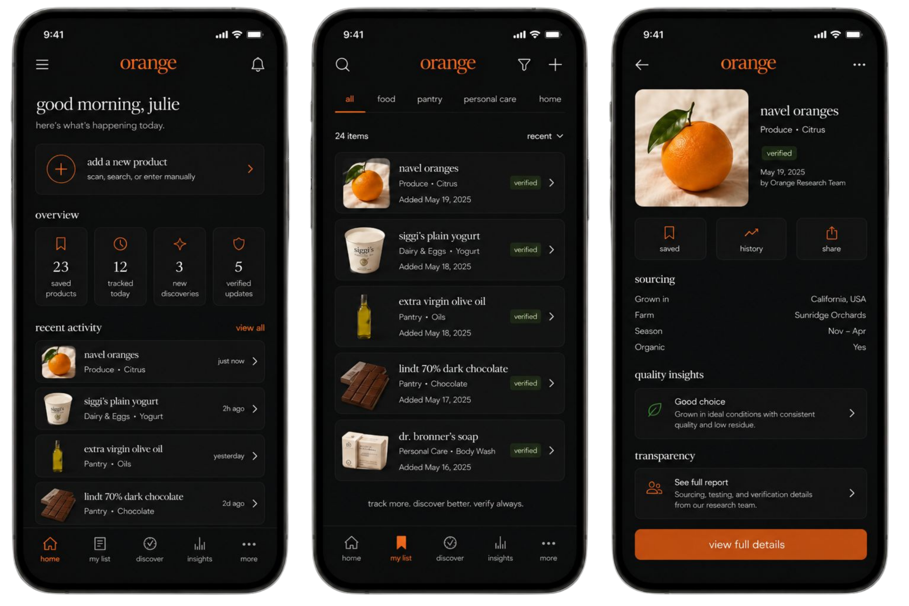

Orange
A mobile-first household research and product tracking system focused on sourcing transparency, lightweight verification and calm everyday usability.
Overview
Product Direction
Orange is a research-first household inventory and product tracking system designed around transparency, sourcing and everyday decision making.
The concept combines soft editorial design with structured product metadata, allowing users to track groceries, pantry items, supplements, personal care products and household essentials inside a calm, approachable interface.
Instead of overwhelming dashboards or aggressive health scoring, Orange focuses on lightweight verification, product history and clean information architecture that feels easy to navigate daily.
Core Experience
Users can save products, organize categories, monitor recent activity, review sourcing details and explore verification insights through a mobile-first interface designed to feel warm, minimal and highly readable.
Dashboard Logic
Features
Track Products
Add products manually, through search or through scanning, then sort them across food, pantry, personal care and home categories.
Verify Details
Surface lightweight verification signals, research notes and product history without making the interface feel heavy or clinical.
Understand Sourcing
Give users a clear view of origin, farm, season, organic status, quality notes and transparency reports from a single product page.
Product Detail Example
Navel Oranges
A sample verified product page showing how Orange could organize everyday product data into a simple, readable profile.
Sourcing
System Notes
Research Layer
Interface System
The visual system blends soft gradients, muted neutrals, editorial typography and mobile-native spacing to create an experience that feels calm, trustworthy and easy to revisit daily.